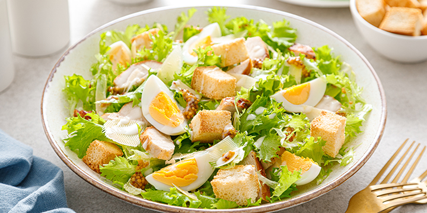
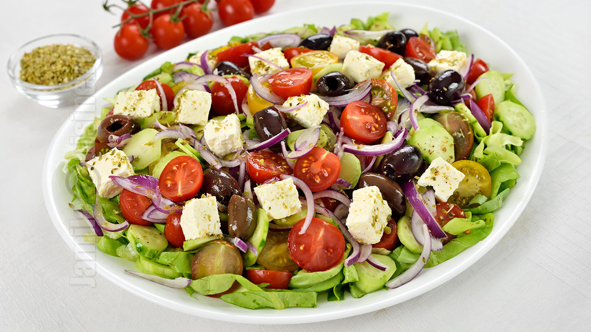
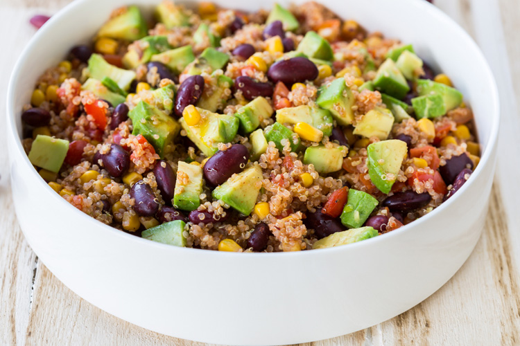
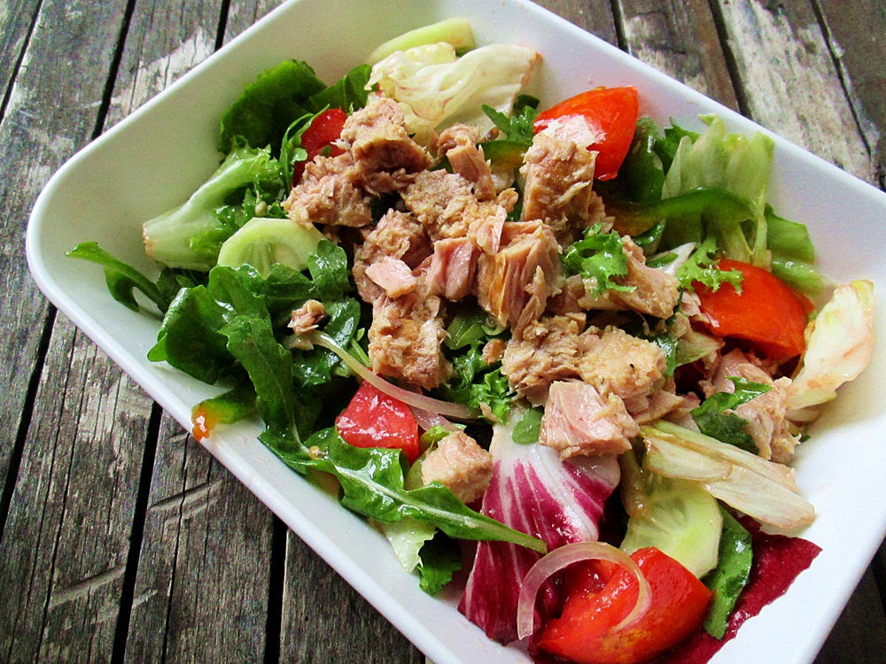
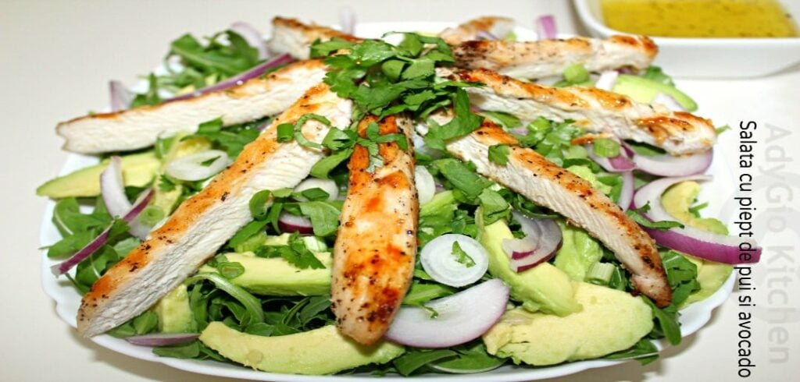

Meniul Salate
Salată Caesar, o combinație clasică și delicioasă.
- Ingrediente: Salată romană, piept de pui la grătar, crutoane, parmezan, dressing Caesar.
- Valori nutriționale: 350 kcal, 25g proteine, 20g carbohidrați, 15g grăsimi.

Preț: 28 RON
Salată Grecească, o opțiune ușoară și plină de arome mediteraneene.
- Ingrediente: Roșii, castraveți, ardei gras, ceapă roșie, măsline, brânză feta, ulei de măsline.
- Valori nutriționale: 300 kcal, 10g proteine, 15g carbohidrați, 20g grăsimi.

Preț: 25 RON
Salată cu quinoa și avocado, o alegere sănătoasă și nutritivă.
- Ingrediente: Quinoa, avocado, roșii cherry, castraveți, salată verde, dressing de lămâie.
- Valori nutriționale: 320 kcal, 12g proteine, 30g carbohidrați, 15g grăsimi.

Preț: 30 RON
Salată cu ton, perfectă pentru o masă ușoară și bogată în proteine.
- Ingrediente: Salată verde, ton, roșii, castraveți, porumb, dressing de iaurt.
- Valori nutriționale: 340 kcal, 25g proteine, 20g carbohidrați, 12g grăsimi.

Preț: 32 RON
Salată de pui cu avocado, o alegere proaspătă și sățioasă pentru orice moment al zilei.
- Ingrediente: Piept de pui la grătar, avocado, salată verde, roșii cherry, castraveți, semințe de dovleac, dressing de lămâie.
- Valori nutriționale: 340 kcal, 27g proteine, 14g carbohidrați, 18g grăsimi.

Preț: 33 RON